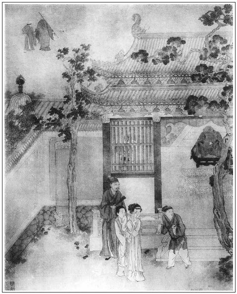

張回此回為萬壑歸原之海也。看他偏有閒筆，將王六兒安放湖州，然後接一李安。噫！何以寫安哉？蓋作者雙結春梅、玉樓。見春梅雖風光佔盡，卻不如玉樓之淡漠於真定之中，而依理為安也。看他以飛天夜叉李貴，隨李衙內之旁，而李安拿張勝，自雲李貴是其叔，而今乃避春梅以往投之，凡三用筆而可知也。夫幸而處亂世之中，不為市井所污，一旦明心見理，得安於真定之天，以遠此趨炎之誚，則惟於理為依，是我之所安也。故玉樓為杏之名，家於真定，不趨嚴州，而李安又往投之也。一篇淫慾之書，不知卻句句是性理之談，真正道書也。世人自見為淫慾耳。今經予批後，再看，便不是真正道學，不喜看之也，淫書雲乎哉！
夫賣玉簪，不求名也；甘受西門之辱，能耐時也；抱恙含酸，能知機也；以李為歸，依於理也；不住嚴州，不趨炎也；家於真定，見道的而堅立不移也；棗強縣裡，強恕而行，無敢怠也。義恤貧兒，處可樂道好禮，出能乘時為治，施吾義以拯民命於水火也。以搗鬼孝哥結者，孝弟乃為仁之本也。幻化孝哥，永錫爾類也。凡此者，杏也，幸也。幸我道全德立，且苟全性命於亂世之中也。以視姦淫世界，吾且日容與於姦夫淫婦之旁，「爾焉能浼我哉」？吁！此作者之深意也。誰謂《金瓶》一書不可作理書觀哉！吾故曰：玉樓者，作者以之自喻者也。
春梅死於周義，亦有說也。夫周者，舟也。周秀者，舟中遺臭也，因春梅而遺臭也。周仁，舟人也。周忠。舟中也。惟周義乃一義渡之舟，凡人可上，隨處可留，喻春梅之狼籍不堪，以至於死也。且喻義舟隨流而去，無所抵止，以喻一部中之人，紛紛紜紜於苦海波中，愛河岸畔，不知回頭留住畫舫以作寶筏，止知放乎中流隨其所止，以沉沒而後已。故普淨座前，必用周義之魂往生為高留住兒。但願世人一篙留住，以登彼岸。不枉了作者於愛河岸邊搗此一百回鬼也。是故以愛姐遇二搗鬼，同往湖州何官人家，見王六兒守節者，自言作《金瓶梅》之意。千古癡人，誰能為作者一驗其筆花也哉？
一部炎涼姦淫文字，乃結以「解冤」一篇，言動念便是財色，財色便有冤家也。
官哥之孽報，同孝哥之幻化，見官多有孽，孝可通神也。
一百胡珠，結入雲指揮夢裡。見我這雲中指示人夢，在此一百回書，而人之讀我一百回書，乃如在雲中夢中，未必能知我這苦心也。
以玳安養月娘，又言危殆而當求安也。
月入雲中，萬事空矣，宜乎俱入空色之悟。
西門復變孝哥，孝哥復化西門，總言此身虛假，惟天性不變。其所以為天性至命者，孝而已矣。嗚乎！結至「孝」字，至矣哉，大矣哉！凡有小說，復敢之與爭衡也乎？故周貧磨鏡一回，乃是大地同一孝思，而共照於民胞物與之內也。
春梅嫁周秀，是欲人以載花船作寶筏也。「色」字大點醒處。
玉皇廟發源，言人之善惡皆從心出。永福寺收煞，言生我之門死我戶也。
韓愛姐抱月琴，方知玉樓會月琴，與翡翠軒、葡萄架彈月琴之妙，蓋一線全穿。玉樓是本能勤歲月者，愛姐是沒奈何改過者，瓶兒、金蓮是不能向上，又不知改過者也。又，一部書，皆是阮郎之淚。然則抱阮當痛絕千古而著此書歟！第一回弟兄哥嫂以「弟」字起，一百回幻化孝哥，以「孝」字結，始悟此書，一部姦淫情事，俱是孝子悌弟窮途之淚。夫以「孝、弟」起結之書，謂之曰淫書，此人真是不孝弟。噫！今而後三復斯義，方使作者以前千百年，以後千百年，諸為人子弟者，知作者為孝弟說法於濁世也。
詩曰：
舊日豪華事已空，張旁西門慶。
銀屏金屋夢魂中。張旁金蓮、瓶兒。
黃蘆晚日空殘壘，張旁月娘。
碧草寒煙鎖故宮。張旁春梅、玉樓。
隧道魚燈油欲盡，張旁一部男子。
妝台鸞鏡匣長封。張旁一部婦女。
憑誰話盡興亡事，
一衲閒雲兩袖風。張旁普淨。

話說韓道國與王六兒，歸到謝家酒店內，無女兒，道不得個坐吃山崩，使陳三兒去，又把那何官人勾來續上。那何官人見地方中沒了劉二，除了一害，依舊又來王六兒家行走，和韓道國商議：「你女兒愛姐，只是在府中守孝，不出來了，等我賣盡貨物，討了賒帳，你兩口跟我往湖州家去罷，省得在此做這般道路。」韓道國說：「官人下顧，可知好哩。」繡眉道國此時翟氏之勢何在？西門之財何在？可歎。一日賣盡了貨物，討上賒帳，雇了船，同王六兒跟往湖州去了，不題。
卻表愛姐在府中，與葛翠屏兩個持貞守節，姊妹稱呼，甚是合當。白日裡與春梅做伴兒在一處。那時金哥兒大了，年方六歲。孫二娘所生玉姐年長十歲，相伴兩個孩兒，便沒甚事做。誰知自從陳敬濟死後，守備又出征去了。這春梅每日珍饈百味，綾錦衣衫，頭上黃的金，白的銀，圓的珠，光照的無般不有。只是晚夕難禁獨眠孤枕，慾火燒心。繡眉飽飯思淫，有家宜鑒。因見李安一條好漢，只因打殺張勝，巡風早晚十分小心。
一日，冬月天氣，李安正在班房內上宿，忽聽有人敲後門，忙問道：「是誰？」只聞叫道：「你開門則個。」李安連忙開了房門，卻見一個人搶入來，閃身在燈光背後。李安看時，卻認得是養娘金匱。李安道：「養娘，你這咱晚來有甚事？」金匱道：「不是我私來，裡邊奶奶差出我來的。」李安道：「奶奶叫你來怎麼？」金匱笑道：「你好不理會得。看你睡了不曾，教我把一件物事來與你。」向背上取下一包衣服，「把與你，包內又有幾件婦女衣服與你娘。前日多累你押解老爺行李車輛，又救得奶奶一命，不然也吃張勝那廝殺了。」說畢，留下衣服，出門走了兩步，又回身道：「還有一件要緊的。」又取出一錠五十兩大元寶來，撇與李安自去了。
當夜躊躇不決。次早起來，逕拿衣服到家與他母親。張夾孝子行徑如此。做娘的問道：「這東西是那裡的？」李安把夜來事說了一遍。張夾孝子心地如此。做母親的聽言叫苦：張夾賢母聲口，方成個做娘的。「當初張勝幹壞事，一百棍打死，他今日把東西與你，卻是甚麼意思？我今六十已上年紀，自從沒了你爹爹，滿眼只看著你，張夾哀哀之音，與磨鏡文中打成一片，直是千秋淚血。若是做出事來，老身靠誰？明早便不要去了。」繡眉此母當與王陵、徐庶之母異出同歸。明以保國，智以保身，是一流人物。張夾賢母聲口，真是啾啾之聲，令人落淚。李安道：「我不去，他使人來叫，如何答應？」婆婆說：「我只說你感冒風寒病了。」李安道：「終不成不去，惹老爺不見怪麼？」做娘的便說：「你且投到你叔叔，山東夜叉李貴那裡住上幾個月，再來看事故何如。」張夾必欲使李安往依李貴，一片天理相投，亦是使玉樓身份愈高也。這李安終是個孝順的男子，就依著娘的話，收拾行李，往青州府投他叔叔李貴去了。張夾真是神龍蹤跡，不愧一個孝子。春梅以後見李安不來，三回五次使小伴當來叫。婆婆初時答應家中染病，次後見人來驗看，才說往原籍家中，討盤纏去了。這春梅終是惱恨在心不題。
時光迅速，日月如梭，又早臘盡陽回，正月初旬天氣。統制領兵一萬三千，在東昌府屯住已久，使家人周忠，稍書來家。教搬取春梅、孫二娘，並金哥、玉姐家小上車。止留下周忠：「東莊上請你二爺看守宅子。」張夾處處為二搗鬼生色。方寫孝，即寫弟，作者真有餘痛在心。原來統制還有個族弟周宣，在莊上住。周忠在府中，與周宣、葛翠屏、韓愛姐看守宅子。周仁與眾軍牢保定車輛，往東昌府來。此一去，不為身名離故土，爭知此去少回程。有詞一篇，單道周統制果然是一員好將材。當此之時，中原蕩掃，志欲吞胡。但見：
四方盜起如屯峰，狼煙烈焰薰天紅。
將軍一怒天下安，腥膻掃盡夷從風。
公事忘私願已久，此身許國不知有。繡眉此等人材無難。張旁上寫孝弟，此即接忠，真是打成一片。
金戈抑日酬戰征，麒麟圖畫功為首。
雁門關外秋風烈，鐵衣披張臥寒月。
汗馬卒勤二十年，贏得斑斑鬢如雪。
天子明見萬里餘，幾番勞勣來旌書。
肘懸金印大如斗，無負堂堂七尺軀。
有日，周仁押家眷車輛到於東昌。統制見了春梅、孫二娘、金哥、玉姐，眾丫鬟家小都到了，一路平安，心中大喜。就在統制府衙後廳居住。周仁悉把「東莊上請了二爺來宅內，同小的老子周忠看守宅舍」，說了一遍。周統制又問：「怎的李安不見？」春梅道：「又題甚李安？那廝我因他捉獲了張勝，好意賞了他兩件衣服，與他娘穿。他到晚夕巡風，進入後廳，把他二爺東莊上收的子粒銀──一包五十兩，放在明間卓上，偷的去了。幾番使伴當叫他，只是推病不來。落後又使叫去，他躲的上青州原籍家去了。」統制便道：「這廝我倒看他，原來這等無恩！等我慢慢差人拿他去。」張夾如此結李安，真是神龍出沒。這春梅也不題起韓愛姐之事。
過了幾日，春梅見統制日逐理論軍情，干朝廷國務，焦心勞思，日中尚未暇食，至於房幃色慾之事，久不沾身。因見老家人周忠次子周義，張夾野渡無人，忽逢義舟，自是沉溺之數矣。年十九歲，生的眉清目秀，眉來眼去，兩個暗地私通，就勾搭了。繡眉以統制之忠赤而受春梅淫穢之報，謂有天理歟？然而此等事，世間正少？朝朝暮暮，兩個在房中下棋飲酒，只瞞過統制一人不知。
一日，不想北國大金皇帝滅了遼國。又見東京欽宗皇帝登基，集大勢番兵，分兩路寇亂中原。大元帥粘沒喝，領十萬人馬，出山西太原府井陘道，來搶東京；副帥斡離不由檀州來搶高陽關。邊兵抵擋不住，慌了兵部尚書李綱、大將種師道，星夜火牌羽書，分調山東、山西、河南、河北、關東、陝西分六路統制人馬，各依要地，防守截殺。那時陝西劉延慶領延綏之兵，關東王稟領汾絳之兵，河北王煥領魏博之兵，河南辛興宗領彰德之兵，山西楊惟忠領澤潞之兵，山東周秀領青兗之兵。張夾六路寫得一時洶湧之甚。
卻說周統制，見大勢番兵來搶邊界，兵部羽書火牌星火來，連忙整率人馬，全裝披掛，兼道進兵。比及哨馬到高陽關上，金國斡離不的人馬，已搶進關來，殺死人馬無數。正值五月初旬，黃沙四起，大風迷目。統制提兵進趕，不防被斡離不兜馬反攻，沒鞦一箭，正射中咽喉，墮馬而死。眾番將就用鉤索搭去，被這邊將士向前僅搶屍首，馬載而還，所傷軍兵無數。可憐周統制一旦陣亡，亡年四十七歲。張夾與西門死的不同。正是：
於家為國忠良將，張旁為戰場一哭。
不辨賢愚血染沙。
古人意不盡，作詩一首，以歎之曰：
勝敗兵家不可期，安危端自命為之。
出師未捷身先喪，落日江流不勝悲。
巡撫張叔夜，見統制沒於陣上，連忙鳴金收軍，查點折傷士卒，退守東昌。星夜奏朝廷，不在話下。部下士卒，載屍首還到東昌府。春梅閤家大小，號哭動天，合棺木盛殮，交割了兵符印信。張夾又一段淒涼。一日，春梅與家人周仁，發喪載靈柩歸清河縣不題。
話分兩頭。單表葛翠屏與韓愛姐，自從春梅去後，兩個在家清茶淡飯，守節持貞，過其日月。正值春盡夏初天氣，景物鮮明，日長針指睏倦。姊妹二人閒中徐步，到西書院花亭上。見百花盛開，鶯啼燕語，觸景傷情。葛翠屏心還坦然，這韓愛姐，一心只想念陳敬濟，凡事無情無緒，睹物傷悲，不覺潸然淚下。繡眉聖人云：或安而行之，或勉強而行之，及其成功則一，翠屏、愛姐之謂也。然傳中於愛姐收拾獨詳，豈亦有取於其勉強而之於自然歟？所謂放下屠刀，立地證佛，信然，信然。姊妹二人正在悲淒之際，只見二爺周宣，走來勸道：「你姊妹兩個少要煩惱，須索解歎。我連日做得夢，有些不吉。夢見一張弓掛在旗竿上，旗竿折了，不知是凶是吉？」張夾必用二爺夢，又映二搗鬼。韓愛姐道：「倒只怕老爺邊上，有些說話。」正在猶疑之間，忽見家人周仁，掛著一身孝，慌慌張張走來，報道：「禍事，老爺如此這般，五月初七日，在邊關上陣亡了！大奶奶、二奶奶家眷，載著靈車都來了。」慌了二爺周宣，張夾別人不慌可知。收拾打掃前廳乾淨，停放靈柩，擺下祭祀，閤家大小，哀號起來。一面做齋累七，僧道唸經。金哥、玉姐披麻帶孝，弔客往來，擇日出殯，安葬於祖塋。俱不必細說。
卻說二爺周宣，引著六歲金哥兒，行文書申奏朝廷，討祭葬，襲替祖職。朝廷明降，兵部覆題引奏：已故統制周秀，奮身報國，沒於王事，忠勇可嘉。張夾比西門不同。遣官諭祭一壇，墓頂追封都督之職。伊子照例優養，出幼襲替祖職。
這春梅在內頤養之餘，淫情愈盛。常留周義在香閣中，鎮日不出。朝來暮往，淫慾無度，生出骨蒸癆病症。逐日吃藥，減了飲食，消了精神，體瘦如柴，而貪淫不已。一日，過了他生辰，到六月伏暑天氣，早辰晏起，不料他摟著周義在床上，一洩之後，繡旁極樂世界。鼻口皆出涼氣，淫津流下一窪口，就鳴呼哀哉，死在周義身上。亡年二十九歲。繡眉所謂牡丹花下死，做鬼也風流。死得快活，死得快活。張夾結春梅，必使春梅如此死者，蓋欲與西門貪慾傷命一對作章法也。這周義見沒了氣兒，就慌了手腳，向箱內抵盜了些金銀細軟，帶在身邊，逃走出外。丫鬟養娘不敢隱匿，報與二爺周宣得知。把老家人周忠鎖了，押著抓尋周義。可霎作怪，正走在城外他姑娘家投住，一條索子拴將來。已知其情，恐揚出醜去，金哥久後不可襲職，拿到前廳，不由分說，打了四十大棍，即時打死。繡眉此是調停善法，亦是苦心。把金哥與孫二娘看著。一面發喪於祖塋，與統制合葬畢。房中兩個養娘並海棠、月桂，都打發各尋投向嫁人去了。止有葛翠屏與韓愛姐，再三勸他，不肯前去。
一日，不想大金人馬搶了東京汴梁，太上皇帝與靖康皇帝，都被虜上北地去了。中原無主，四下荒亂。兵戈匝地，人民逃竄。黎庶有塗炭之哭，百姓有倒懸之苦。大勢番兵已殺到山東地界，民間夫逃妻散，鬼哭神號，父子不相顧。張夾有月娘一邊在。葛翠屏已被他娘家領去，張夾又去一個翠屏，只合如此結，又興起愛姐臨清之意。各逃生命。止丟下韓愛姐，無處依倚，不免收拾行裝，穿著隨身慘淡衣衫，出離了清河縣，前往臨清找尋他父母。到臨清謝家店，店也關閉，主人也走了。不想撞見陳三兒，三兒說：「你父母去年就跟了何官人，往江南湖州去了。」
這韓愛姐一路上懷抱月琴，唱小詞曲，張夾所以云「玉樓抱阮來，愛姐抱阮去」，千里金針同一起結，真是作者千秋眼淚心血灑於窮途也。往前抓尋父母。隨路饑餐渴飲，夜住曉行，忙忙如喪家之犬，急急如漏網之魚。弓鞋又小，千辛萬苦。行了數日，來到徐州地方，天色晚了，投在孤村裡面。一個婆婆，年紀七旬之上，正在灶上杵米造飯。這韓愛姐便向前道了萬福，告道：「奴家是清河縣人氏，因為荒亂，前往江南投親，不期天晚，權借婆婆這裡投宿一宵，明早就行，房金不少。」那婆婆看這女子，不是貧難人家婢女，生得舉止典雅，容貌非俗。因說道：「既是投宿，娘子請炕上坐，等老身造飯，有幾個挑河夫子來吃。」那老婆婆炕上柴灶，登時做出一大鍋稗稻插豆子干飯，又切了兩大盤生菜，撮上一包鹽，張夾一部飲饌酒如此結。只見幾個漢子，都蓬頭精腿，褌褲兜襠，腳上黃泥，張夾一部裝飭體態如此結。進來放下鍬橛，便問道：「老娘有飯也未？」婆婆道：「你每自去盛吃。」
當下各取飯菜，四散正吃。只見內一人，約四十四五年紀，紫面黃發，便問婆婆：「這炕上坐的是甚麼人？」婆婆道：「此位娘子，是清河縣人氏，前往江南尋父母去，天晚在此投宿。」那人便問：「娘子，你姓甚麼？」愛姐道：「奴家姓韓，我父親名韓道國。」那人向前扯住問道：「姐姐，你不是我侄女韓愛姐麼？」那愛姐道：「你倒好似我叔叔韓二。」兩個抱頭相哭做一處。張夾此又真正冷遇也。讀者試思，比《殺狗記》何如？因問：「你爹娘在那裡？你在東京，如何至此？」這韓愛姐一五一十，從頭說了一遍，「因我嫁在守備府裡，丈夫沒了，張夾愛姐反是如此，正其名義，所以雲為艾火也。我守寡到如今。我爹娘跟了何官人，往湖州去了。我要找尋去，荒亂中又沒人帶去，胡亂單身唱詞，覓些衣食前去，不想在這裡撞見叔叔。」張夾真比父母還親，比金蓮之叔叔何如？那韓二道：「自從你爹娘上東京，我沒營生過日，把房兒賣了，在這裡挑河做夫子，每日覓碗飯吃。既然如此，我和你往湖州，尋你爹娘去。」愛姐道：「若是叔叔同去，可知好哩。」當下也盛了一碗飯，與愛姐吃。愛姐呷了一口，見粗飯，不能咽，只呷了半碗，就不吃了。一宿晚景題過。
到次日天明，眾夫子都去了，韓二交納了婆婆房錢，領愛姐作辭出門，望前途所進。那韓愛姐本來嬌嫩，弓鞋又小，身邊帶著些細軟釵梳，都在路上零碎盤纏。將到淮安上船，迤裡望江南湖州來，非止一日，抓尋到湖州何官人家，尋著父母，相見會了。張夾今日「愛河」二字已成一片，須細思其在愛河中，搗鬼胡謅，均屬寓言。欲炙好淫之病也，故必至湖州，字意又可想。不想何官人已死，家中又沒妻小，止是王六兒一人，丟下六歲女兒，有幾頃水稻田地。不上一年，韓道國也死了。王六兒原與韓二舊有楂兒，就配了小叔，種田過日。繡眉韓二至此，反得其所。那湖州有富家子弟，見韓愛姐生的聰明標緻，都來求親。韓二再三教他嫁人，愛姐割發毀目，出家為尼，誓不再配他人。繡眉難得難得。對此不自愧者，世有幾人？張夾艾能炙病，故用之針灸姦夫淫婦也。一部姦淫，須如此針灸。後來至三十一歲，無疾而終。正是：
貞骨未歸三尺土，怨魂先徹九重天。
後韓二與王六兒成其夫婦，請受何官人家業田地，不在話下。
卻說大金人馬，搶過東昌府來，看看到清河縣地界。只見官吏逃亡，城門晝閉，人民逃竄，父子流亡。但見：
煙生四野，日蔽黃沙。封豕長蛇，互相吞噬。龍爭虎鬥，各自爭強。張夾一篇戰場文，卻是十兄弟、金、瓶、梅以及眾夥計等類人惹惱天意也。皂幟紅旗，佈滿郊野。男啼女哭，萬戶驚惶。番軍虜將，一似蟻聚蜂屯；短劍長槍，好似森森密竹。一處處死屍朽骨，橫三豎四；一攢攢折刀斷劍，七斷八截。個個攜男抱女，家家閉戶關門。十室九空，不顯鄉村城郭；獐奔鼠竄，那存禮樂衣冠。張夾先插數句，接入月娘有勢。
正是：得多少──
宮人紅袖哭，王子白衣行。
那時，吳月娘見番兵到了，家家都關鎖門戶，亂竄逃去，不免也打點了些金珠寶玩，帶在身邊。張夾此非牆頭之物乎？至此不捨，月娘自是僧尼一流。那時吳大舅已死，止同吳二舅、玳安、小玉，領著十五歲孝哥兒，把家中前後都倒鎖了，要往濟南府投奔雲理守。一來避兵，二者與孝哥完就親事。一路上只見人人荒亂，個個驚駭。可憐這吳月娘，穿著隨身衣服，和吳二舅男女五口，雜在人隊裡挨出城門，到於郊外，往前奔行。到於空野十字路口，張夾是可以為孝為逆之地。只見一個和尚，身披紫褐袈裟，手執九環錫杖，腳靸芒鞋，肩上背著條布袋，袋內裹著經典，大移步迎將來，與月娘打了個問訊，高聲大叫道：「吳氏娘子，你到那裡去？還與我徒弟來！」諕的月娘大驚失色，說道：「師父，你問我討甚麼徒弟？」那和尚又道：「娘子，你休推睡裡夢裡，你曾記的十年前，在岱岳東峰，被殷天錫趕到我山洞中投宿。我就是那雪洞老和尚，法號普靜。你許下我徒弟，如何不與我？」吳二舅便道：「師父出家人，如何不近道？此等荒亂年程，亂竄逃生，他有此孩兒，久後還要接代香火，他肯捨與你出家去？」和尚道：「你真個不與我去？」吳二舅道：「師父，你休閒說，誤了人的去路。後面只怕番兵來到，朝不保暮。」和尚道：「你既不與我徒弟，如今天色已晚，也走不出路去。番人就來，也不到此處，你且跟我到這寺中歇一夜，明早去罷。」吳月娘問：「師父，是那寺中？」那和尚用手只一指，道：「那路旁便是。」和尚引著來到永福寺。張夾一部大結穴，如群龍爭入之海也。吳月娘認的是永福寺，曾走過一遭。
比及來到寺中，長老僧眾都走去大半，止有幾個禪和尚在後邊打座。佛前點著一大盞硫璃海燈，燒著一爐香。已是日色銜山時分，當晚吳月娘與吳二舅、玳安、小玉、孝哥兒，男女五口兒，投宿在寺中方丈內。小和尚有認的，安排了些飯食，與月娘等吃了。那普靜老師，跏趺在禪堂床上張旁記清。敲木魚，口中唸經。月娘與孝哥兒、小玉在床上睡，張旁記清。吳二舅和玳安做一處，著了荒亂辛苦的人，都睡著了。止有小玉不曾睡熟，起來在方丈內，打門縫內看那普靜老師父唸經。看看念至三更時，只見金風淒淒，斜月朦朦，人煙寂靜，萬籟無聲。佛前海燈，半明不暗。這普靜老師見天下荒亂，人民遭劫，陣亡橫死者極多，發慈悲心，施廣惠力，禮白佛言，薦拔幽魂，解釋宿冤，絕去掛礙，各去超生。於是誦念了百十遍解冤經咒。少頃，陰風淒淒，冷氣颼颼。有數十輩焦頭爛額，蓬頭泥面者，或斷手折臂者，或有刳腹剜心者，或有無頭跛足者，或有吊頸枷鎖者，都來悟領禪師經咒，列於兩旁。禪師便道：「你等眾生，冤冤相報，不肯解脫，何日是了？汝當諦聽吾言，隨方托化去罷。」偈曰：
勸爾莫結冤，冤深難解結。
一日結成冤，千日解不徹。
若將冤解冤，如湯去潑雪。
若將冤報冤，如狼重見蠍。
我見結冤人，盡被冤磨折。
我今此懺悔，各把性悟徹。
照見本來心，冤愆自然雪。
仗此經力深，薦拔諸惡業。
汝當各托生，再勿將冤結。繡眉楞嚴耶？法華耶？大悲耶？亦復如此觀。讀此書而以為淫者、穢者，無目者也。張夾一部言盜、言淫、言殺、言孽，乃忽結以解冤、結冤。然則作者固自有沉冤莫伸，上及其父母，下及其昆弟，有千秋莫解之冤而提筆作此，以仇其所仇之人也。
當下眾魂都拜謝而去。小玉竊看，都不認得。繡眉試看全傳收此一段中，清清皎皎，如琉璃光明，映徹萬象，所謂芥子納須彌，亦作如是觀。少頃，又一大漢進來，身長七尺，形容魁偉，全裝貫甲，胸前關著一矢箭，自稱「統制周秀，因與番將對敵，折於陣上，今蒙師薦拔，今往東京，托生於沈鏡為次子，名為沈守善去也。」張夾安身守善，此是作者勸人本意。言未已，又一人，素體榮身，口稱是清河縣富戶西門慶，「不幸溺血而死，今蒙師薦拔，今往東京城內，托生富戶沈通為次子沈越去也。」張夾所謂深冤之人也。小玉認的是他爹，諕的不敢言語。張夾插此一句，生動之甚。已而又有一人，提著頭，渾身皆血，自言是陳敬濟，「因被張勝所殺，蒙師經功薦拔，今往東京城內，與王家為子去也。」張夾王者亡也，自尋死亡也。已而又見一婦人，也提著頭，胸前皆血。自言：「奴是武大妻、西門慶之妾潘氏是也。不幸被仇人武松所殺。蒙師薦拔，今往東京城內黎家為女托生去也。」張夾黎者，犁也。作者蓋欲犁其舌也。已而又有一人，身軀矮小，面皆青色，自言是武植，「因被王婆唆潘氏下藥吃毒而死，蒙師薦拔，今往徐州鄉民范家為男，托生去也。」繡眉諸鬼俱來，而王婆老狗不至，想墮阿鼻地獄矣。張夾重作《水滸》自是犯手。已而又有一婦人，面色黃瘦，血水淋漓，自言：「妾身李氏，乃花子虛之妻，西門慶之妾，因害血山崩而死。蒙師薦拔，今往東京城內，袁指揮家托生為女去也。」張夾袁者遠也，借此以遠諷人也。已而又一男，自言花子虛，「不幸被妻氣死，蒙師薦拔，今往東京鄭千戶家托生為男。」張夾鄭者，證也。子虛化官哥，西門化孝哥，自是質證兩回因果之人也。已而又見一女人，頸纏腳帶，自言西門慶家人來旺妻宋氏，「自縊身死，蒙師薦拔，今往東京朱家為女去也。」張夾朱者誅也。不勝其誅之人也。已而又一婦人，面黃肌瘦，自言周統制妻龐氏春梅，「因色癆而死，蒙師薦拔，今往東京與巨家為女，托生去也。」張夾巨者，懼也，應色而死，欲其懼而知悔也。已而又一男子，裸形披髮，渾身杖痕，自言是打死的張勝，「蒙師薦拔，今往東京大興衛貧人高家為男去也。」張夾死於舟中，固須尋篙，為下篙留住作引。已而又有一女人，項上纏著索子，自言是西門慶妾孫雪娥，不幸自縊身死，「蒙師薦拔，今往東京城外貧民姚家為女去也。」張夾姚者，遙也。雪娥固是借雪作寓，言水遠煙遙之人也。已而又一女人，年小，項纏腳帶，自言「西門慶之女，陳敬濟之妻，西門大姐是也，不幸自縊身死，蒙師薦拔，今往東京城外，與番役鍾貴為女，托生去也。」張夾大姐因與你要飯相爭而死，今欲其再生改悔，以主持中饋為事，蓋亦勉人舉案齊眉之意。已而又見一小男子，自言周義，「亦被打死，蒙師薦拔，今往東京城外高家為男，名高留住兒，托生去也。」張夾所云「一篙留住，便登彼岸」。故在眾人托生之末，以深儆世人也。言畢，各恍然不見。小玉諕的戰慄不已。原來這和尚，只是和這些鬼說話。
正欲向床前告訴吳月娘，不料月娘睡得正熟，張夾月娘本是夢中人，非夢不足以化。又瓶兒有夢，西門有夢，敬濟有夢，週二有夢，合以月娘一夢結之。又一部繁華富貴，以燈影描之，以夢境結之，大是儆人癡念處。一靈真性，同吳二舅眾男女，身帶著一百顆胡珠，一柄寶石絛環，張夾胡珠，蓋言一百回文字；絛環，則又月牙之意也。前往濟南府，投奔親家雲理守。一路到於濟南府，尋問到雲參將寨門，通報進去。雲參將聽見月娘送親來了，一見如故。敘畢禮數。原來新近沒了娘子，央浼鄰舍王婆來陪待月娘，張夾此處直使王婆入來，寫得報應分明，令人怕甚。在後堂酒飯，甚是豐盛。吳二舅、玳安另在一處管待。因說起避兵就親之事，因把那百顆胡珠、寶石、絛環教與雲理守，權為茶禮。雲理守收了，並不言其就親之事。到晚，又教王婆張夾一路寫王婆，令人怕甚。陪月娘一處歇臥。
將言說念月娘，以挑探其意，說：「雲理守雖武官，乃讀書君子，從割衫襟之時，就留心娘子。繡眉假詞可思。不期夫人沒了，鰥居至今。今據此山城，雖是任小，上馬管軍，下馬管民，張夾比提刑所何如？生殺在於掌握。娘子若不棄，願成伉儷之歡，一雙兩好，令郎亦得諧秦晉之配。等待太平之日，再回家去不遲。」月娘聽言，大驚失色，半晌無言。這王婆回報雲理守。
次日夕晚，置酒後堂，請月娘吃酒。月娘只知他與孝哥兒完親，連忙來到席前敘坐。雲理守乃道：「嫂嫂不知，下官在此雖是山城，管著許多人馬，有的是財帛衣服，金銀寶物，缺少一個主家娘子。下官一向思想娘子，如渴思漿，如熱思涼。不想今日娘子到我這裡與令郎完親，天賜姻緣，一雙兩好，成其夫婦，在此快活一世，有何不可？」月娘聽了，心中大怒，罵道：「雲理守，誰知你人皮包著狗骨！我過世丈夫不曾把你輕待，繡眉此雖夢語，非節氣人罵不出。張夾直對第一回熱結文字「後來也有個靠傍」一語。如何一旦出此犬馬之言？」雲理守笑嘻嘻向前，把月娘摟住，求告說：「娘子，你自家中，如何走來我這裡做甚？張夾又是十弟兄絕妙結文。自古上門買賣好做，不知怎的，一見你，魂靈都被你攝在身上。沒奈何，好歹完成了罷。」一面拿過酒來和月娘吃。月娘道：「你前邊叫我兄弟來，等我與他說句話。」雲理守笑道：「你兄弟和玳安兒小廝，已被我殺了。」即令左右：「取那件物事，與娘子看。」不一時，燈光下，血瀝瀝提了吳二舅、玳安兩顆頭來。諕的月娘面如土色，一面哭倒在地。被雲理守向前抱起：「娘子不須煩惱，你兄弟已死，你就與我為妻。我一個總兵官，也不玷辱了你。」月娘自思道：「這賊漢將我兄弟家人害了命，我若不從，連我命也喪了。」乃回嗔作喜，說道：「你須依我，奴方與你做夫妻。」雲理守道：「不拘甚事，我都依。」月娘道：「你先與我孩兒完了房，我卻與你成婚。」張夾猶是權詐，寫月娘真是死而不悔。雲理守道：「不打緊。」一面叫出雲小姐來，和孝哥兒推在一處，飲合巹杯，綰同心結，成其夫婦。然後扯月娘和他雲雨。這月娘卻拒阻不肯，被雲理守忿然大怒，罵道：「賤婦！你哄的我與你兒子成了婚姻，敢笑我殺不得你的孩兒？」向床頭提劍，隨手而落，血濺數步之遠。張夾此時月娘方受權詐之累。正是：
三尺利刀著項上，滿腔鮮血濕模糊。張夾如此大結，卻是十兄弟數內人。
月娘見砍死孝哥兒，不覺大叫一聲。不想撒手驚覺，卻是南柯一夢。諕的渾身是汗，遍體生津。連道：「怪哉，怪哉。」小玉在旁，便問：「奶奶怎的哭？」月娘道：「適間做得一夢不詳。」不免告訴小玉一遍。小玉道：「我倒剛才不曾睡著，悄悄打門縫見那和尚原來和鬼說了一夜話。剛才過世俺爹、五娘、六娘和陳姐夫、周守備、孫雪娥、來旺兒媳婦子、大姐都來說話，各四散去了。」張夾如此總結，真令觀者通身痛快。月娘道：「這寺後見埋著他每，夜靜時分，屈死淹魂如何不來！」張夾真令觀者通身痛快。
娘兒們說了回話，不覺五更，雞叫天明。吳月娘梳洗面貌，走到禪堂中，禮佛燒香。只見普靜老師在禪床上高叫：「那吳氏娘子，你如何可省悟得了麼？」張夾一語喚醒天下人。是作者問天下後世萬萬人，非普靜問月娘一人也。試問看過《金瓶梅》者，何以答此一句？這月娘便跪下參拜：「上告尊師，弟子吳氏，肉眼凡胎，不知師父是一尊古佛。適間一夢中都已省悟了。」繡眉月娘大有根器。張夾一部搗鬼，要人如此。老師道：「既已省悟，也不消前去，你就去，也無過只是如此。張夾棒喝。言只是如此做夢也，非言適才夢事。倒沒的喪了五口兒性命。你這兒子，有分有緣遇著我，都是你平日一點善根所種。不然，定然難免骨肉分離。當初，你去世夫主西門慶造惡非善，此子轉身托化你家，本要蕩散其財本，傾覆其產業，臨死還當身首異處。繡眉可畏，可思。今我度脫了他去，做了徒弟，常言『一子出家，九祖升天』，你那夫主冤愆解釋，亦得超生去了。你不信，跟我來，與你看一看。」於是扠步來到方丈內，只見孝哥兒還睡在床上。老師將手中禪杖，向他頭上只一點，教月娘眾人看。忽然翻過身來，卻是西門慶，項帶沉枷，腰繫鐵索。繡眉往沈通家為次子者，又是准？張夾孽魂一現，方知前此之非。復用禪杖只一點，依舊是孝哥兒睡在床上。張夾言孽子回頭即是孝哥也。月娘見了，不覺放聲大哭，原來孝哥兒即是西門慶托生。繡眉西門慶反落好處。張夾回照子虛化官哥，直令觀者滿身痛快。
良久，孝哥兒醒了。張夾二字真是救世婆心。安得天下為人子者，皆有醒了之日哉！月娘問他：「如何你跟了師父出家。」在佛前與他剃頭，摩頂受記。可憐月娘扯住慟哭了一場，干生受養了他一場。張夾此又是作者千秋苦志，不能伸其孝子親，而深深鬱鬱，作此書之意也。所以必做磨鏡、李安以及孝哥幻化等意，總為此一句不快於心也。到十五歲，指望承家嗣業，不想被這老師幻化去了。繡眉讀至此，使人哭不得，笑不得。吾為月娘孤苦伶仃，則肝腸欲斷；為西門慶度脫苦海，則眉眼欲舒，閱者著眼。吳二舅、小玉、玳安亦悲不勝。當下這普靜老師，領定孝哥兒，起了他一個法名，喚做明悟。繡旁一部本旨。張夾酒色財氣，不淨不能明；不明又安能悟？既然明悟，又安能不孝弟？作辭月娘而去。臨行，分付月娘：「你們不消往前途去了。如今不久番兵退去，南北分為兩朝，中原已有個皇帝，多不上十日，兵戈退散，地方寧靜了，你每還回家去安心度日。」月娘便道：「師父，你度托了孩兒去了，甚年何日我母子再得見面？」不覺扯住，放聲大哭起來。張夾又是一部言孝、言弟，哀哀餘音，令人不能終讀也。老師便道：「娘子休哭！那邊又有一位老師來了。」哄的眾人扭頸回頭，當下化陣清風不見了。正是：
三降塵寰人不識，倏然飛過岱東峰。
不說普靜老師幻化孝哥兒去了，且說吳月娘與吳二舅眾人，在永福寺住了十日光景，張夾永福寺，真是眾水歸源之所，與玉皇廟對。嗚乎！誰能不死於此戶也哉？果然大金國立了張邦昌在東京稱帝，置文武百官。徽宗、欽宗兩君北去，康王泥馬渡江，在建康即位，是為高宗皇帝。拜宗澤為大將，復取山東、河北。分為兩朝，天下太平，人民復業。後月娘歸家，開了門戶，家產器物都不曾疏失。後就把玳安改名做西門安，承受家業，人稱呼為「西門小員外」。繡眉此子原不俗。張夾結轉玳安。夫玳安者，大安也。冤解孽散。直至此時，西門方得大安也。如此一大結，其妙何如？養活月娘到老，壽年七十歲，善終而亡。此皆平日好善看經之報。有詩為證：
閥閱遺書思惘然，誰知天道有循環。
西門豪橫難存嗣，敬濟顛狂定被殲。
樓月善良終有壽，瓶梅淫佚早歸泉。
可怪金蓮遭惡報，遺臭千年作話傳。
文回
一
或謂《金瓶梅》淫書也，非也。淫者見之謂之淫，不淫者不謂之淫，但睹一群鳥獸孳尾而已。或謂《金瓶梅》善書也，非也。善者見善謂之善，不善者謂之不善，但覺一生快活隨心而已。然則《金瓶梅》果奇書乎？曰：不奇也。人為世間常有之人，事為世間常有之事，且自古及今，普天之下，為處處時時常有之人事。既不同《封神榜》之變化迷離，又不似《西遊記》之妖魔鬼怪，夫何奇之有？
故善讀書者，當置身於書中，而是非羞惡之心不可泯，斯好惡得其真矣，又當置身於書外，而彰癉勸懲之心不可紊，斯見解超於眾矣。又須於未看之前，先將作者之意，體貼一番，更須於看書之際，總將作者之語，思索幾遍。看第一回，眼光已射到百回上，看到百回，心思復憶到第一回先。書自為我運化，我不為書捆縛，此可謂能看書者矣。曰淫書也可，曰善書也可，曰奇書也亦無不可。
二
文禹門又云：作者或有深意，批者並無會心，閱者當自具手眼，別出心思，作如是觀可也，不作如是觀亦可也。作如是觀，當有全部在胸中，不可但有前半截，竟無後半截也。不作如是觀，當無一字在腹內，不可記得一、二回並不可記得一、二段也。
從來無所羨慕者不作書，無所怨恨者不作書，非曾親身閱歷者作書亦不能成書。作《金瓶梅》者，其果有所欣羨耶？其果有所仇恨耶？其果曾閱歷一番否耶？我不得而知之。然而，我固無所羨慕，無所怨恨，而我之所經歷者。耳之所聞，目之所睹，有與此書相同者，亦有與此書相異者，且有與此書相同而實異者，與此書相異而暗同者，故知作者殆亦有見矣，有所聞矣，亦嘗身親其境矣。
自始至終，全為西門慶而作也，為非西門慶而類乎西門慶者作也。批者亦當時時、處處、事事有一西門慶，方是不離其本旨。奈何只與春梅掇臀，玉樓舐痔而與月娘作對頭！猶詡詡然曰：此作者之深思也，吾得其間矣。嗟乎，妄甚！
按：前評寫於光緒五年（1879）五月二十二日。後評寫於光緒八年（1882）秋九月立冬前兩日。